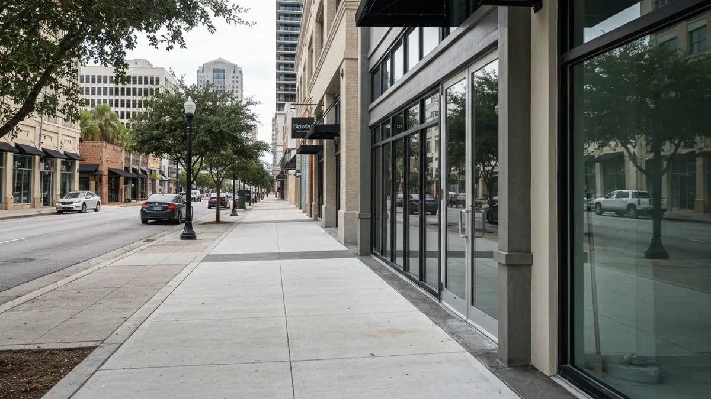

Concrete Contractors in Channelside

Concrete Driveways, Patios, And Pool Decks in Channelside
In the vibrant, ever-evolving Channelside district, the demands on concrete surfaces are unlike anywhere else in Tampa. As an urban port area, Channelside properties experience significant foot traffic, heavy commercial vehicle loads, and the corrosive influence of humid, salty air from the nearby Garrison Channel and Tampa Bay. Whether you reside in a modern high-rise condo, operate a bustling waterfront business, or manage a public space, durable, high-performance concrete is essential. Our services address the specific challenges of Channelside's dense urban environment, from creating resilient driveways that withstand constant deliveries to crafting stylish, slip-resistant patios and pool decks that elevate the dynamic lifestyle unique to this waterfront community.
Why Channelside Residents Choose Tampa Concrete Pros
Tampa Concrete Pros stands out in Channelside due to our deep understanding of this dynamic urban environment. Our team’s local expertise means we’re not just familiar with city permitting processes and building codes, but also the specific logistical challenges of working in a dense, high-traffic area. We pride ourselves on prompt service and efficient project management, ensuring minimal disruption to Channelside’s busy residents and businesses. Our reputation for delivering durable, aesthetically pleasing concrete solutions that stand up to both the local climate and intense usage makes us the preferred choice.
Our commitment to Channelside extends beyond just pouring concrete; we provide solutions tailored to the district's unique needs. We specialize in commercial-grade concrete installations designed to endure heavy vehicle loads common in a port area, as well as crafting sophisticated, low-maintenance finishes perfect for modern condo patios and rooftop pool decks. We prioritize materials that resist saltwater corrosion and provide excellent heat reflection, crucial for Channelside’s waterfront properties. This specialized approach ensures longevity and enhances the value of your Channelside property.
Our Concrete Driveways, Patios, And Pool Decks Services in Channelside
- Commercial & Residential Driveways: We install robust concrete driveways capable of withstanding the demanding commercial traffic and frequent vehicle use typical in Channelside, ensuring long-term durability for businesses and multi-family residences. Our designs also enhance curb appeal for the area's modern aesthetic.
- Custom Patios & Balconies: For Channelside's urban living spaces, we design and install custom concrete patios and high-rise balconies, focusing on elegant finishes and practical layouts for smaller, high-density areas. These provide perfect outdoor retreats, resistant to the humid, salty air.
- Pool Deck Solutions: Our pool deck services are ideal for Channelside's community and residential pools, offering slip-resistant, heat-reflective surfaces that stand up to heavy use and the Florida sun. We ensure proper drainage and use materials compatible with chlorine and saltwater systems.
- Concrete Repair & Resurfacing: Addressing the wear and tear from heavy foot traffic and environmental exposure, we provide expert concrete repair and resurfacing for existing Channelside surfaces. This restores structural integrity and aesthetic appeal without requiring full replacement, maintaining property value.
Serving Channelside and Surrounding Areas
Channelside is a vibrant urban district situated just east of Downtown Tampa, uniquely defined by its waterfront location along the Garrison Channel and proximity to Port Tampa Bay. Tampa Concrete Pros proudly serves the entire Channelside area, from the bustling developments along Water Street Tampa and Sparkman Wharf, to the residential towers overlooking the channel, and businesses situated closer to the cruise terminals. We are highly familiar with the specific layouts and access points along Channelside Drive, Meridian Avenue, and stretches of Franklin Street. Our service extends efficiently to properties near The Florida Aquarium, Amalie Arena, and the dynamic entertainment and dining zones that characterize this rapidly growing, energetic part of Tampa.
Frequently Asked Questions About Concrete Driveways, Patios, And Pool Decks in Channelside
How much does concrete driveways, patios, and pool decks cost in Channelside?
Costs for concrete projects in Channelside vary based on factors like project size, accessibility, and chosen finishes, which often lean towards premium options for the area's modern aesthetic. While commercial-grade installations might be more complex, many residential projects involve smaller, custom spaces typical of urban condos, influencing the total investment. We provide transparent, competitive quotes tailored to your specific Channelside property needs.
How long does concrete driveways, patios, and pool decks take for a typical Channelside home?
The duration for a concrete project in Channelside depends on its scope. A typical condo patio or balcony might take 2-4 days, including curing. Larger commercial driveways or extensive pool deck renovations for multi-family complexes will naturally require more time, usually 1-2 weeks. We prioritize efficient scheduling to minimize disruption in this busy urban environment.
Do you serve all of Channelside?
Absolutely! Tampa Concrete Pros provides comprehensive service across all of Channelside. Whether your property is nestled within the Water Street Tampa development, a condo along Channelside Drive, a business near Sparkman Wharf, or any location up to the Port Tampa Bay vicinity, our team is equipped and ready. We are familiar with the unique access and logistical considerations throughout the entire district.
What special considerations are there for concrete installation near Channelside's waterfront?
Installing concrete near Channelside's waterfront requires specific expertise to combat saltwater corrosion and high humidity. We utilize specialized concrete mixes and apply high-performance sealants designed to resist environmental degradation, preventing spalling and discoloration. Additionally, we ensure proper drainage solutions are in place to manage water runoff effectively, protecting your investment and maintaining the integrity of the concrete surface for years in this unique coastal climate.
Ready to schedule your concrete driveways, patios, and pool decks service in Channelside? Call us today or use the contact form above — we serve Channelside and all surrounding areas of Tampa, FL. Most Channelside jobs are scheduled within 48-72 hours.
Ready to Start Your Channelside Project?
Get a free, no-obligation quote for your concrete project. Our team is ready to help transform your Channelside property.
Call (813) 705-9021